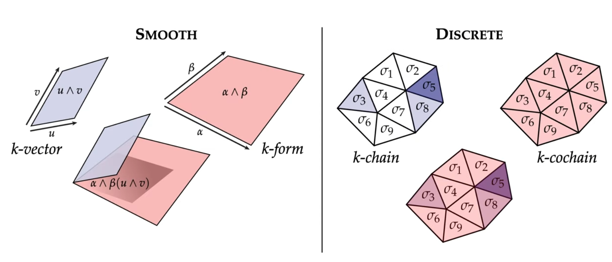
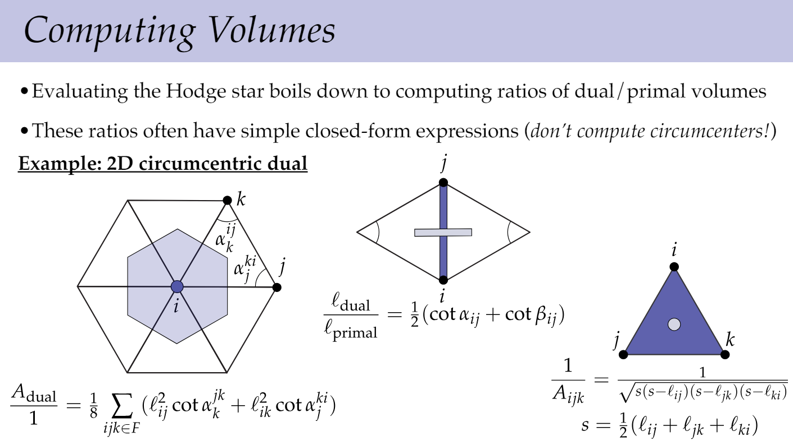

参考资料
CS 15-458/858: Discrete Differential Geometry. Keenan Crane
Differential forms crash course. Jiří Lebl.
Introduction to differential forms. Donu Arapura.
Differential Forms
Derivative Operator
一些基本规则：
在此基础上可以进行一些推导，比如：
卧槽，叉乘和旋度！所以根据经典的，可以导出：
事实上这一结论可以被推广到任意的-form，结论仍然成立。
几个有趣的对应关系——
某种意义上和说的是同一回事：
特别注意一个小坑，针对-form的laplacian operator是：
在时第二项恰好为0。
然而，和的适用范围可比广得多。
1-form
所以到底什么是？这取决于我们是在什么样的上下文中进行的这一系列演算，换言之，演算出来的结果是拿来干嘛的。
定义中的1-form为具有如下形式的表达式：
这里先把看作无特殊含义的记号，其意义要在确定了它能进行什么样的运算后才会浮现。现考虑某条性质良好的曲线，定义在上的积分为：
设想我们把曲线参数化为，则此积分可以被写成：
其中。可以看到，当使用参数进行积分时，将被替换为：
右侧的是货真价实的中的坐标值。注意这里的也没什么特别含义，其意义仅仅是由积分运算赋予的，指明我们是在用什么来进行积分。（这符号系统也太垃圾了，上文中的各具有不同的类型，真是整蛊小能手……）
在这种诠释下，是由对它进行的积分定义的，对施加的一切运算规则都需要确保积分结果不变。
这个诠释相当不错，在进行变量代换时不会受到影响，直到最后真的要用某个变量进行积分时，才展开成与有关的形式，不管中间进行了多复杂的变量代换，都蕴含在中了。
2-form
考虑简化的情形：
对参数化曲面，定义：
其中，
是在方向上的长度。
这就是说，在用积分时会变成：
很容易将这套定义推广到-form。
验证
上面的定义看起来很不错，还需要验证一下它是否满足我们熟悉的运算规则，这样才能大胆地用它来算东西。
比如这是大家都喜欢的分配律：
验证如下：
这里省略了一些平凡的定义，比如2-forms之间的加法。在明确了各种定义后，这堆公式与其说是证明，不如说是平凡的同义反复。不过话说回来，整个数学都是同义反复（
总而言之，透过积分和jacobian矩阵，我们终于可以拿着到处晃荡了。只是需要注意，这里differential k-forms的意义是由维表面上的积分赋予的，如果我们处在一个相应的积分无数学意义的context中，就不能随意使用这些运算规则。
当然，应该还有其他视角，进而适用范围也与此不同。不过我的学习态度比较功利，对此暂时不感兴趣。
Stokes’s Theorm
其中表示的边界。
一个有趣的关联是，，于是——
从而。
Inner Product
对上的-form，定义：
Vector-Valued k-form
-form是把个向量映射成一个标量，-valued -form则是把个向量映射成一个维向量。
设，那么：
Surfaces
Induced Metric. 对参数曲面，设是中的两个向量，它们在上的夹角、长度等可以被这样反映：
注意到，其中是的Jacobian矩阵。我们把称为first fundamental form，显然它是对称的。我没什么insight，看不出这哪里fundamental了……
如果我们把眼光限制在二维曲面上的话，它上面的differential forms会相对简单，只有三种——
- 0-form，标量函数
- 1-form，就像曲面上的一个向量场
- 2-form，scalar multiples of oriented area，某种意义上也像标量函数
0/2-form之间对应的hodge star都非常平凡，1-form的hodge star则是在曲面上原地旋转90°。若将此曲面参数化为，那么这个1-form hodge star可以表示成：
其中是使得在曲面上转90°的映射——
Discretization
基本概念
Discrete differential -form. oriented -simplex → value。如果这个simplicial complex中的simplex是带编号的，那么上面的-form就能直接用一个向量来表示，每个元素都代表一个oriented simplex对应的-form值。
de Rham Map. 设是一个oriented simplicial complex，-simplex ，可以像这样把-form离散化到上：
Boundary. 设-simplex，定义其边界为：
注意这里的加法就只单纯地组装出来一个oriented simplex的列表，这样的列表被称为“simplicial chain”。Simplex上的边界可以被自然地拓展到chain上：
美妙的事情来了，boundary of boundary是！
Simplicial -cochain：linear map taking a simplicial -chain to a number——
显然之前的discrete -form可以被自然地视作一个simplicial -cochain。-chain就像-vector，-cochain则像-form，也就是对-vector的measurement：
 （图片来自CS 15-458/858）
Discrete Exterior Derivative
既然discrete differential -form是把differential -form在oriented simplex上积分得来的，那么连续版derivative operator作用的结果在oriented simplex上积分，就能得到离散版本的d operator。
考虑某个0-form，它的离散版本是，即在顶点处采样得到的一堆值。我们知道，是个1-form，那么就应该是把在1-simplex上积分的结果——
其中oriented edge。显然，这一结果可以借助Stokes定理推广到任意-form上。噢噢噢噢噢，有了！
Matrix Representation
之前提到，在domain进行了编号的情况下，discrete -form可以被编码成列向量。设想某个simplicial 2-complex，有个顶点，条边，而且都编好了号，那么从0-form到1-form的derivative operator就可以被编码为一个的incident matrix，用它乘对应的列向量， 就能得到对应的向量。类似地，simplicial complex上所有的derivative都可以被编码成这样的矩阵，矩阵内容由simplicial complex中的邻接关系、编号、以及朝向决定。
Discrete Hodge Star
之前把各种连续情形下的概念弄到离散情形下的方式都非常自然，但是接下来要说的discrete hodge star就充满了工程感——我们还没找到完美的离散版本，所以只能强行构造一个，近似捕获其主要特征，从而进行各种涉及到hodge star的计算（等）。
Dual Forms (Based on Poincaré Duality). 对simplicial -complex，其中的每个primal -form对应一个dual 0-form，每个primal -form对应一个dual 1-form，以此类推，每个primal 0-form对应一个dual -form。
Circumcentric Dual. 如何决定dual mesh的顶点位置呢？对simplicial -complex中的每个-simplex，其外接球体是唯一的，我们就把这个-simplex的dual vertex放在球心的位置。可以证明，这样构造出的dual form和primary form在空间中相互垂直。
也存在其他确定dual mesh位置的方式，但circumcentric dual是最常用的。
Diagonal Hodge Star. 考虑一个primal -form和其dual -form，disgonal hodge star被定义为：
其中是simplex cell的体积。
Discrete hodge star的定义背后有着这样的动机：假设primal form和其对应的dual form在几何上相互垂直，这和连续情形下的hodge star一致。我们知道，连续hodge star可以保持作用前后的”长度”不变，而discrete differential froms的值是把连续情形的值在simplex内积分得到的，其结果会受到cell大小的影响。通过，这一影响被排除了。
之所以把用这种方式定义的hodge star称为diagonal hodge star，是因为其矩阵表示是个对角矩阵，对角元素正是这些。
一般来说，我们很少会真的去计算dual mesh的位置，而是用各种边长和内角直接导出volume的比值，就像这样（0-form的volume被工程地设定为1）：

Discrete Surfaces
TODO